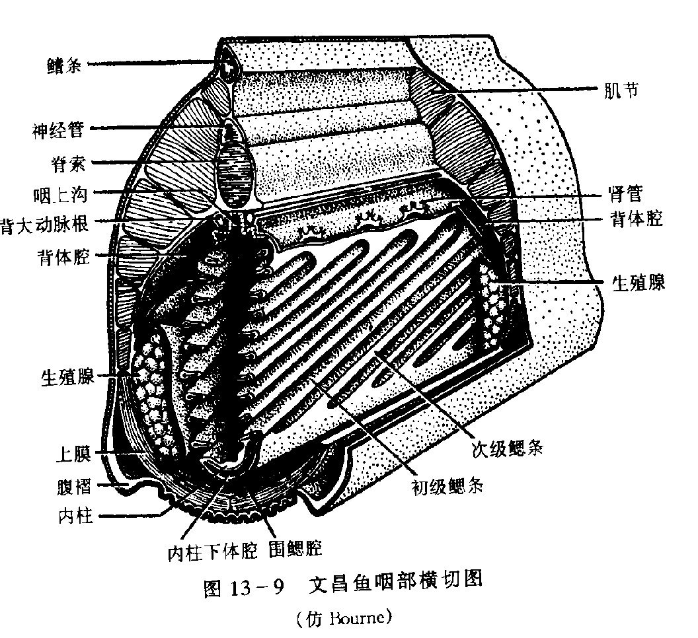

一、脊索动物门的主要特征
脊索动物是动物界最高等的门类，其共同特征可概括为"三大主要特征"加若干次要特征。三大主要特征为：脊索、背神经管、咽鳃裂。
次要特征（共性但非本门独有）：肛后尾（至少在胚胎期出现）、心脏位于消化道腹面、由中胚层形成的内骨骼。
多数研究者认为，脊椎动物与棘皮动物、半索动物具有共同的祖先，由无脊椎动物进化而来。
（一）脊索动物与无脊椎动物构造对比
从支持结构、神经中枢、呼吸器官、尾部、心脏位置等可对二者作系统比较：
- 无脊椎动物：无脊索也无脊椎；腹神经索；不具鳃裂；无肛后尾；心脏位于消化道背面。
- 脊索动物：具脊索（脊椎动物被脊柱代替）；背神经管；具咽鳃裂；具肛后尾；心脏位于消化道腹面。

（二）三大主要特征详解
1. 脊索（notochord）
脊索是位于消化道和神经管之间的一条棒状结构，具有支持身体的功能。
结构：脊索内部由泡状细胞组成，外围以结缔组织的脊索鞘（含弹性组织膜和纤维组织膜），坚韧而富有弹性。泡状细胞含有液泡，吸水膨胀而使脊索具有一定的硬度。
存在情况：
- 所有脊索动物的胚胎早期均具有脊索；
- 低等脊索动物（尾索、头索）终生保留脊索；
- 脊椎动物中脊索被骨质的脊柱所代替，仅胚胎期存在。
2. 背神经管（dorsal nerve cord）
背神经管是位于脊索背面的中空管状的中枢神经系统。
特点：中空（管腔）、位于背方、在脊索之上——这三点区别于无脊椎动物的实心腹神经索。
分化：脊椎动物的神经管前端膨大形成脑，脑后的部分形成脊髓。低等脊索动物（如文昌鱼）则仅为一条中空神经管，无明显脑与脊髓的分化。
3. 咽鳃裂（pharyngeal gill slits）
咽鳃裂是消化道前段（咽部）两侧一系列成对的裂缝。
功能：低等水生脊索动物用以呼吸和滤食。
存在情况：
- 低等脊索动物及鱼类（尤其是鱼类）：终生保留鳃裂作为呼吸通道；
- 其他脊椎动物（陆生及次生水生）：只在胚胎期出现鳃裂，成体以肺呼吸。
（三）次要特征
除三大主要特征外，脊索动物还具以下共性特征（这些特征并非脊索动物独有，但有助于识别）：
- 肛后尾：肛门位于躯干末端之后，尾部延伸至肛门之后——至少在胚胎期出现。无脊椎动物肛门多在体末端，无明显肛后尾。
- 心脏位于消化道腹面：与无脊椎动物心脏位于消化道背面相反。
- 中胚层形成的内骨骼：与节肢动物外胚层来源的外骨骼不同。
- 此外还有：闭管式循环（尾索动物开管例外）、后口形成、三胚层、真体腔等。
（四）脊索动物门的分类概述
脊索动物现存40000余种，依脊索存在情况及是否形成头部，分为两大类群、三个亚门：
- 原索动物（无头类）：脊索终生存在或仅限尾部，无明显的头和脑。
- 尾索动物亚门（海鞘等，被囊动物）
- 头索动物亚门（文昌鱼）
- 脊椎动物（有头类）：脊索被脊柱取代，出现明显的头部（脑化）。下分7纲：圆口纲、软骨鱼纲、硬骨鱼纲、两栖纲、爬行纲、鸟纲、哺乳纲。
| 项目 | 无脊椎动物 | 脊索动物 |
|---|---|---|
| 支持结构 | 无脊索、无脊椎（或外骨骼） | 具脊索；脊椎动物以脊柱取代 |
| 中枢神经 | 腹神经索（实心） | 背神经管（中空） |
| 咽部 | 无鳃裂 | 具咽鳃裂 |
| 尾部 | 无肛后尾 | 肛后尾（至少胚胎期） |
| 心脏位置 | 消化道背面 | 消化道腹面 |
| 骨骼来源 | 多为外胚层外骨骼 | 中胚层内骨骼 |
本节小结
1. 脊索动物门三大主要特征：脊索、背神经管、咽鳃裂——所有脊索动物胚胎期均具备。
2. 脊索位于消化道与神经管之间，由泡状细胞构成，低等终生存在、高等被脊柱取代。
3. 背神经管位于脊索背方、中空；高等分化为脑和脊髓，是"有头类"形成的基础。
4. 咽鳃裂低等水生终生存在，陆生仅胚胎期出现。
5. 脊索动物分两大类群三亚门：原索动物（尾索、头索，无头类）与脊椎动物（有头类，7纲）。
6. 脊索动物与棘皮动物、半索动物可能有共同祖先（详见"脊索动物起源"一节）。